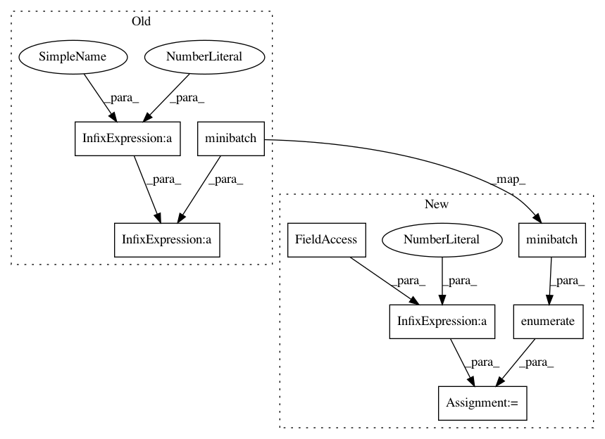

ffd72221f97a6c94170127b18ecd74e0d2fa8048,spotlight/factorization/implicit.py,ImplicitFactorizationModel,fit,#ImplicitFactorizationModel#Any#Any#,102
Before Change
epoch_loss = 0.0
for (batch_user,
batch_item) in minibatch(user_ids_tensor,
item_ids_tensor,
batch_size=self._batch_size):
user_var = Variable(batch_user)
item_var = Variable(batch_item)
positive_prediction = self._net(user_var, item_var)
if self._loss == "adaptive_hinge":
negative_prediction = self._get_adaptive_negatives(
user_var
)
else:
negative_items = sample_items(
self._num_items,
len(batch_user),
random_state=self._random_state)
negative_var = Variable(
gpu(torch.from_numpy(negative_items))
)
negative_prediction = self._net(user_var, negative_var)
self._optimizer.zero_grad()
loss = loss_fnc(positive_prediction, negative_prediction)
epoch_loss += loss.data[0]
loss.backward()
self._optimizer.step()
if verbose:
print("Epoch {}: loss {}".format(epoch_num,
epoch_loss / (epoch_num + 1)))
def _get_adaptive_negatives(self, user_ids, num_neg_candidates=5):
After Change
for (minibatch_num,
(batch_user,
batch_item)) in enumerate(minibatch(user_ids_tensor,
item_ids_tensor,
batch_size=self._batch_size)):
user_var = Variable(batch_user)
item_var = Variable(batch_item)
positive_prediction = self._net(user_var, item_var)
if self._loss == "adaptive_hinge":
negative_prediction = self._get_adaptive_negatives(
user_var
)
else:
negative_items = sample_items(
self._num_items,
len(batch_user),
random_state=self._random_state)
negative_var = Variable(
gpu(torch.from_numpy(negative_items))
)
negative_prediction = self._net(user_var, negative_var)
self._optimizer.zero_grad()
loss = loss_fnc(positive_prediction, negative_prediction)
epoch_loss += loss.data[0]
loss.backward()
self._optimizer.step()
epoch_loss /= minibatch_num + 1
if verbose:
print("Epoch {}: loss {}".format(epoch_num, epoch_loss))
In pattern: SUPERPATTERN
Frequency: 3
Non-data size: 8
Instances
Project Name: maciejkula/spotlight
Commit Name: ffd72221f97a6c94170127b18ecd74e0d2fa8048
Time: 2017-07-13
Author: maciej.kula@gmail.com
File Name: spotlight/factorization/implicit.py
Class Name: ImplicitFactorizationModel
Method Name: fit
Project Name: maciejkula/spotlight
Commit Name: ffd72221f97a6c94170127b18ecd74e0d2fa8048
Time: 2017-07-13
Author: maciej.kula@gmail.com
File Name: spotlight/sequence/implicit.py
Class Name: ImplicitSequenceModel
Method Name: fit
Project Name: maciejkula/spotlight
Commit Name: ffd72221f97a6c94170127b18ecd74e0d2fa8048
Time: 2017-07-13
Author: maciej.kula@gmail.com
File Name: spotlight/factorization/explicit.py
Class Name: ExplicitFactorizationModel
Method Name: fit